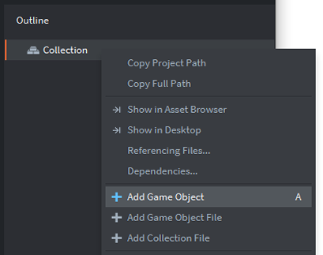
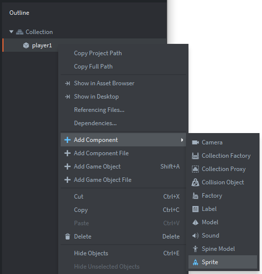
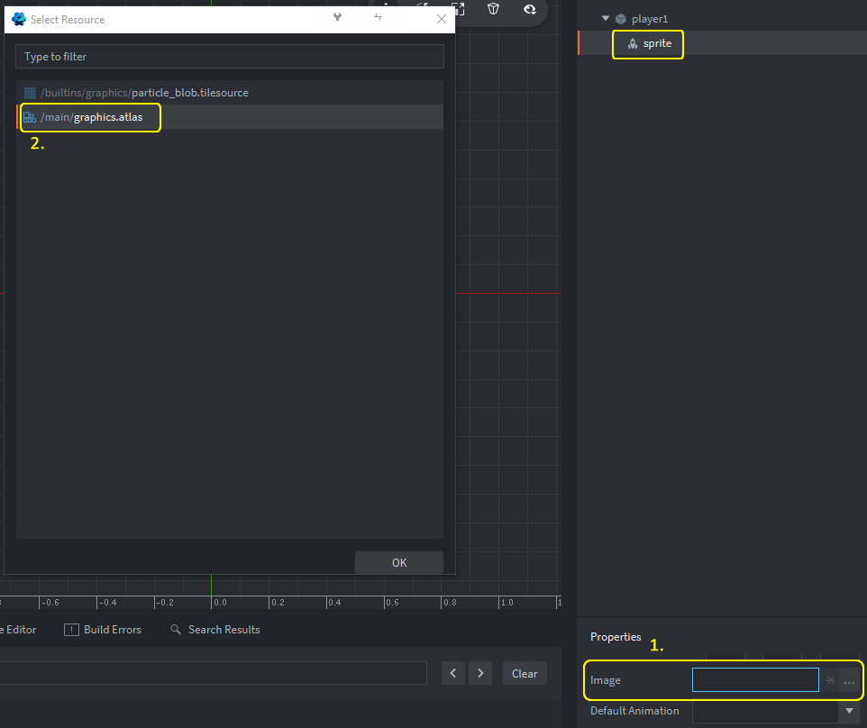
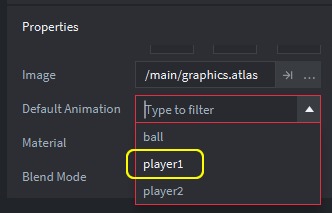

Tutorials for 2D games projects
Pong | Creating the game objects: player 1.
Games are made from objects. Those objects have sprites (graphics), scripts (code), collision objects (event triggers) and other interesting things.
Now that we have our sprites ready in the atlas, we can create the objects in our game and apply the sprites to them.
- In the assets panel (on the left), drop down the "main" folder to see the files if you need to, and double click 'main.collection'. You should now see "Collection" in the Outline panel on the right.
This will ensure you are adding the game objects into the main collection. As your games become bigger and more complex you may have more than one collection to help organise different elements of the game better. However, Pong is such a simple game we can put all our objects in one place.
- In the outline panel, right click, 'Collection' and choose, 'Add Game Object'. Note the keyboard shortcut for this is just pressing the letter A.

A new game object (go) has been added to the game but at this stage it has no sprite and no code. Notice a properties panel appears underneath the outline panel. This is where attributes for the game object can be 'hard-coded' into the game, but also changed in the code later.
- In the properties panel, change the 'Id' property from 'go' to 'player1'. It just makes your project more readable later if we name the objects properly. Rather confusingly, in the code we still refer to objects as 'go' (game object) because we reference a library they are all stored in.
You will notice another property called, 'Url' will change automatically. This is used later to pass messages between different game objects such as, 'I've collided with the ball' to cause code to run when events happen. Message passing is a common object-oriented programming technique.
- In the outline panel, right click the 'player1' game object and choose, 'Add Component', 'Sprite'.

There is no need to change the Id of this because 'sprite' accurately describes what it is. Notice a hierarchy is starting to develop in the outline panel. The collection has a player1 game object which has a sprite component. When you write-up the design of your project you can plan this hierarchy in advance of actually doing it in Defold.
We now need to attach the graphic in our atlas to this sprite component.
- Scroll down in the Properties panel if you need to, in order to see the 'Image' property.
Click the three dots: ... and choose /main/graphics.atlas from the pop-up box.

- Set the 'Default animation' property to player1.

It is possible to define many sprites as an animation sequence in the atlas, but in this tutorial we are just using static sprites.
You can press 'F' on the keyboad to zoom out to see the sprite now attached to the player1 object. You can also zoom in and out by holding CTRL and using the mouse wheel if you have one.
What you are seeing in the editor panel in the middle of the screen is the position of the player1 object in the game world. Our game world only has one screen called, 'main.collection'. Note the centre of the object is at position 0,0 where the green and red lines intersect. To the left of the green line and underneath the red line is off the screen. You can run the program by pressing F5 and you will see the player1 object peeking out of the bottom left corner of the screen as shown in the editor.
We need to move the paddle to its correct starting position.
- Click the player1 game object in the outline panel (make sure it is the object you are selecting and not the sprite).
In the properties panel set the X property to: 40 and the Y property to: 320. - Save the changes by pressing CTRL-S or 'File', 'Save All'.
That's the first player added to our game. The next stage is to add player 2. Stage 3b >
 Craig'n'Dave | Version 1.3
Craig'n'Dave | Version 1.3